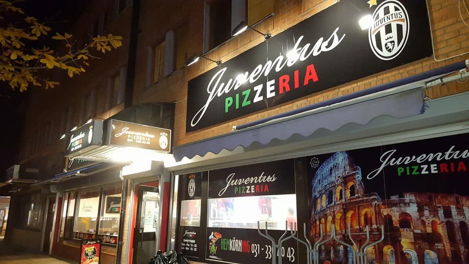
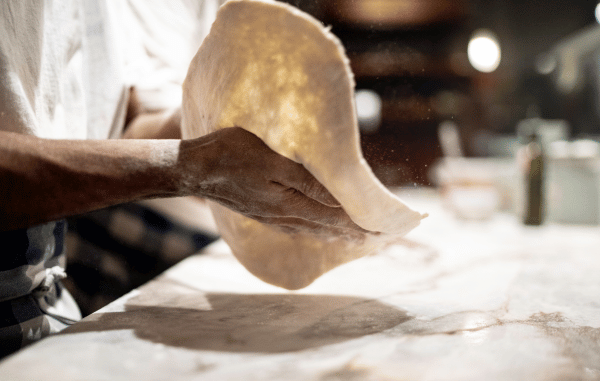

Välkommen till Juventus Pizzeria
Din destination för en smakresa genom årtionden av tradition och innovation. Sedan 1980-talet har vi varit en ikonisk del av Angered och Göteborgs matkultur.
Vi på Juventus Pizzeria är inte bara en pizzeria, vi är en institution. Med vårt breda utbud av läckra rätter, inklusive pizza och kebab, har vi försett generationer av matälskare med enastående smakupplevelser.
Varje pizza bakas med omsorg av noggrant utvalda råvaror och en deg som tar tid att utveckla sin smak. Det är skillnaden du smakar i varje tugga.

Men det slutar inte där
Vi välkomnar kunder från alla samhällsskikt och hörn av världen. Genom åren har vi byggt upp en speciell relation med våra gäster, där varje besökare känner sig hemma hos oss.
Vi serverar 100% halalcertifierad mat och strävar alltid efter att använda de färskaste och bästa ingredienserna i varje rätt vi lagar.
Vårt mål är enkelt, ingen ska lämna Angered utan att ha upplevt våra smaker. Vi ser fram emot att välkomna dig till vår familj och dela vår passion för god mat och gemenskap.